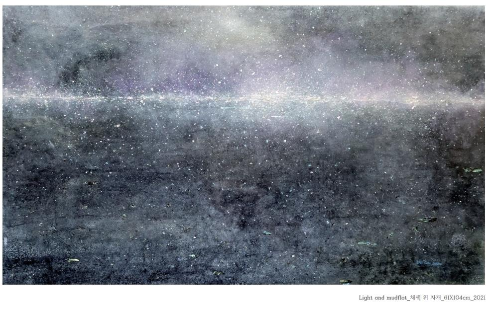
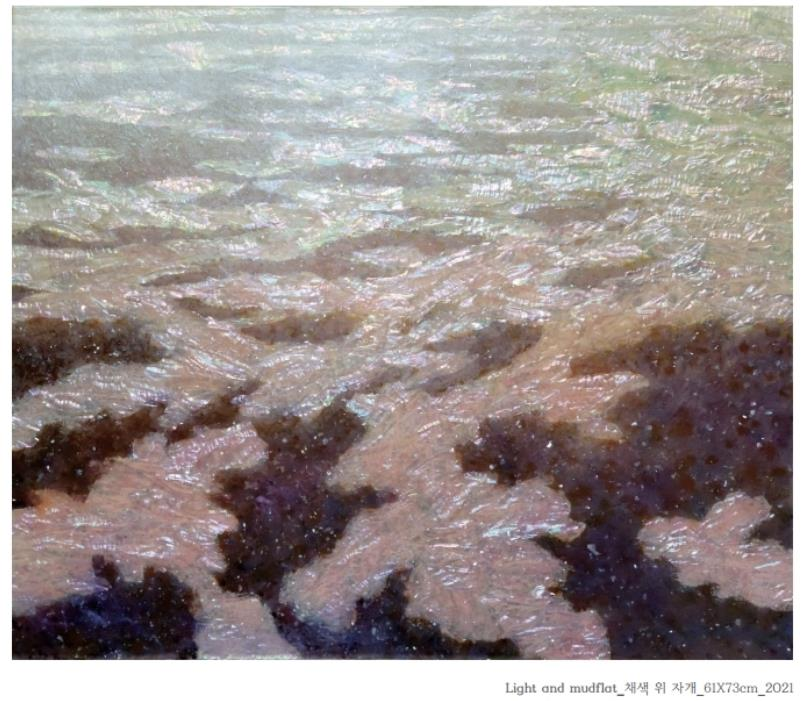

최주석
https://blog.naver.com/dd9904/222436903734
***빛, 갯벌***
무엇을
>>갯벌
어떻게
>>우주처럼 그림
왜
>>갯벌은 바닷물로 가득 차올라 있다가도 조금 시간이 지나면 끝이 보이지 않는 지평선을 보여준다. 지평선 위로는 어지러운 듯 아지랑이가 피어오르고 그 공간 속에서 느껴지는 소금 냄새, 보석을 뿌려 놓은 듯 멀리 빛나는 수평선, 그 위를 떠다니는 섬들, 어디서부터 떠밀려 왔는지 모를 어부의 부표와 그물, 기력을 잃은 듯 무뎌진 유리조각 등 자연이 주는 빛나는 신비로움과 따스함을 느끼게 된다. 그리고 한편의 영화가 끝이 난 것처럼 성난 바닷물이 다시 밀려든다. 나는 이렇게 느껴지는 공간의 인상을 ‘빛나는 기억 속의 작은 우주’라고 명명하며 그것을 화면 안에 담고자 함.
특징
>>채색 후 자개로 작품을 만들었다.

-최주석_Light and mudflat_채색 위 자개_61*104cm_2021

-최주석_Light and mudflat_채색 위 자개_61*73cm_2021